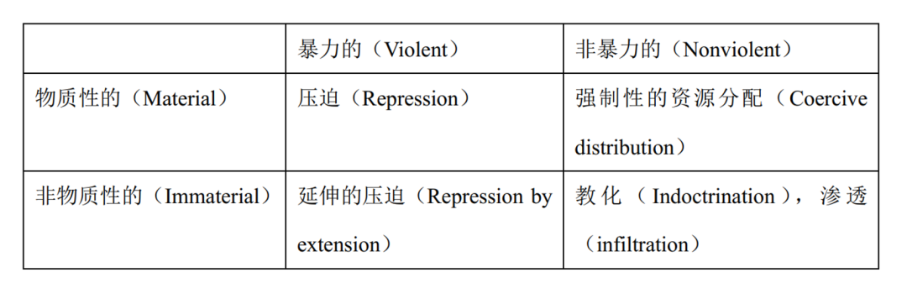

Hassan, Mattingly and Nugent | 政治控制：策略与后果
政文观止
政文观止Poliview
微信号 zhengwenguanzhi
功能介绍 从一群年轻人的视角出发，专业、专注、专解海内外比较政治经济研究的前沿佳作。
__发表于
比较政治学 121个
文献来源： Hassan, Mai, Daniel Mattingly and Elizabeth R. Nugent, “Political Control,” Annual Review of Political Science , Vol. 25, No.1 (2022): 6.1-6.20.
作者简介： Mai Hassan，密歇根大学政治学系副教授；Daniel Mattingly，耶鲁大学政治学系助理教授；Elizabeth R. Nugent，耶鲁大学政治学系助理教授 ****
任何一个国家都希望本国民众能够遵纪守法、足额纳税。而为了让公民履行这些基本义务，国家必须进行“政治控制”（political control），也就是通过各种不同的策略确保国家的政策方针得到广泛的遵从，同时尽可能减少来自社会的反抗。那么，政治领导人的工具箱里究竟有哪些政治控制手段呢？一些政治科学家把目光投向最为极端的政治控制——通过暴力手段逼迫民众服从（violent repression），甚至从肉体上消灭反对者。还有一些研究者则关注如何借助更加隐蔽且温和的信息操纵（information manipulation）去改变民众的行为。但是，在这两种方式之间，可能还存在着许多形态各异的政治控制手段，但最终的目的都是为了获得民众的服从。
政治控制的类型学，以及四种重要的手段 ****
不同类型的政治控制可以从两个维度来加以区分：（1）政治控制手段在多大程度上依赖暴力？比较暴力的政治控制往往更直接，所针对的目标也更容易察觉。相比之下，不怎么依赖暴力的政治控制更为隐蔽，目标往往感觉不到自己被控制；（2）政治控制所涉及的威逼利诱究竟是物质性的（material）还是非物质性的？前者往往和一些有形的利益相关，例如人身安全、物质财富。后者则主要是情感价值层面的内容，如个人的归属感、世界观、社群内的无形制约等。下表展示了这一类型学，以及四种重要的政治控制手段。

1. 直接的压迫与延伸的压迫
压迫是最受关注的一种政治控制手段，它依赖于实际运用或威胁使用暴力，包括逮捕、殴打、暗杀、虐待、失踪、屠杀、强迫流放等等。直接的压迫（direct repression）意味着公开使用暴力，异见者也会感受到其生命受到伤害。但对国家而言，压迫并不需要长期维持才会有所成效，难以预测的压迫同样可以实现政治控制。许多发展中国家较低的国家能力恰恰在无意中带来了压迫的任意性（Tapscott 2021）。还有一些压迫并不会真正运用暴力，而是借助暴力的威胁（threat of violence）。国家可以设定一些法律性、制度性的红线，宣告他们能够对越线者合法地使用暴力。
在压制潜在的反对者时，国家还需要考虑压制对象的选择：如面向精英还是面向大众？这种选择一方面取决于领导人的威胁感知（Wintrobe 2000, Brownlee 2007, Svolik 2012），另一方面取决于政权收集高质量情报信息的能力（Greitens 2016）。此外，即便在精英和大众间做出了选择，压迫行为的范围也不尽相同，类似于内战时期的暴力，压迫可以无差别地针对某个群体，也可以精确地指向个别对象（Sudduth 2017, Truex 2019, Goldring & Matthews 2022, Woldense 2022）。
压迫不仅能改变政治机会结构、提高反抗的成本，还可以带来恐惧（fear）。而个体对受到伤害的恐惧反过来能促进集体服从，因为整个社群会因害怕受到集体报复而进行自我审查（Rozenas 2020）。典型的压迫一般需要依赖物质性诱因，例如直接地影响人身安全和生活质量。而还有一些压迫可以借助间接的、非物质的因素，这就有利于国家对那些鞭长莫及的对象施加“延伸的压迫”（repression by extension）。例如“关系控制”（relational repression）中就不仅仅有物质性的影响，还需要借助个人的社会关系、亲属间的情感因素来发挥作用（Deng & O’Brien 2013）。
2. 教化
教化的主要形式包括学校教育、政治宣传、政治审查。首先，尽管传统观点认为教育的普及是民主化的一个环节（Stasavage 2005），近来的研究发现非竞争性体制更倾向于普及大众教育。平均来看，国家普及教育的时间往往要比它首次民主转型早一百年（Paglayan 2021）。其次，政治宣传可以描绘出一个治理高效的国家形象（Rozenas & Stukal 2019），可以煽动对国家敌对势力的愤怒（Mattingly & Yao 2022），也可以转移民众的注意力（King et al. 2017）。而政治审查的一个特殊效应是，国家可以通过审查一部分人来获取另一部分人的支持（Esberg 2020）。
3. 强制性的资源分配
国家还可以通过分配社会福利和资源来实现更好的政治控制。从民众的层面上看，国家的资源分配可以提高民众对政权的依赖程度，这就使得国家对受益者有了更强的影响力，尤其是当后者缺少国家以外的生存途径时，国家收回资源的威胁就变得更加有力。进一步的，在刚刚建立的非竞争性体制中，诸如土地资源的分配可以被用来削弱传统精英的权力。而在巩固的非竞争性体制里，国家对工作机会的分配可以创造出一个沉默的中产阶级：一方面是通过改变物质激励，国家可以剥夺工作机会；另一方面则是因为“吃人的嘴软”，即便没有失去工作的威胁，稳定的工作也会让人倾向于支持政权。这体现出资源分配不仅有强迫的作用，也有一种说服的作用（Rosenfeld 2020）。
强制性的资源分配与政治笼络（co- optation）这一概念关系密切。广义上说，政治笼络指的是国家通过一个非暴力的过程来招安那些独立于国家的自主团体。更具体的说，政治笼络就是国家刻意将利益分配扩大到潜在的挑战者，用利益换取他们的忠诚（Frantz & Kendall-Taylor 2014）。
4. 渗透
国家还可以利用官僚组织、地方社群精英、公民社会来收集信息、动员民众。在上个世纪，许多国家都建立过深入社会展开监视与控制的组织，原东德的“史塔西”（Stasi）就是其中最为著名的一个。但事实上，更多的渗透性组织是公开而非秘密的，例如古巴保卫革命委员会（Committees for the Defense of the Revolution），就起到收集基层信息、充当国家耳目的作用。在拉丁美洲，工会组织也是一个重要的渗透工具，那些受制于国家、被政权渗透的工会能够有效规避阶级冲突并且构建和谐的劳资关系。此外，渗透还会捕获地方精英，使得国家能够利用地方原本的社会联系来劝说民众服从。公民社会不仅能激励官员提供更好的公共服务（Tsai 2007），也能够变成官员笼络地方精英的平台，并借助这些精英的帮助来推行不受欢迎的政策（Mattingly 2020）。
那么，国家什么时候会在渗透上下功夫呢？这取决于时下社会群体的结构和强弱。国家的策略一般是“乘虚而入”，公民社会壮大的地方会对渗透有更强的反抗，因而国家就不会投入太多。在波兰的“爱国牧师项目”（Patriot Priest program）中，当时波兰的执政党往往选择那些天主教会势力原本弱小的地方进行渗透工作（Nalepa & Pop-Eleches 2021）。而在舆论环境更自由的地方，国家必须花费更多的成本来招募线人（Piotrowska 2020）。进一步的，如果国家发现并没有潜在的渗透渠道，它们也可以主动创造。在非洲，国家常常赋予地方精英以国家权威，这就给国家介入地方事务创造了机会（Boone 2003, Nathan 2021）。
**政治控制的意外后果
**
政治控制常常展现出惊人的成效，但是，控制的背后也往往存在着不可忽视的成本与代价。在现有研究中得到最多关注的是国家压迫下的反弹动员（backlash mobilization）。压迫的亲历者会滋生反政权的情绪（Roberts 2020, LeBas & Young 2021, Wang 2021），而这种感受可能会拓展到那些目睹过压迫，或者有亲属受到压迫的人身上（Blackman et al. 2020, Wang 2021, Pan & Siegel 2020）。近年来，更多学者关注压迫在什么环境下会导致服从，又在什么情况下导致反抗。网络结构（Siegel 2011）、情感（Jasper 2011, Pearlman 2013, Young 2019 2020）、组织结构（Sullivan 2016）、预防性的压迫（Pierskalla 2010, Ritter & Conrad 2016）都被认为会导致不同的后果。而另一方面，我们也应该注意到政治控制的社会和经济后果，以及这些后果如何进一步影响国家能力（Nathan 2021, Thacil 2020, Charnysh 2019, Berman & Nugent 2020, Albertus et al. 2020）。
政治控制为何会带来各种意外后果？一个重要的机制是身份认同（identity）。压迫及其对目标造成的创伤会通过心理过程塑造政治身份，并在组织和社会化过程中得到加强（Balcells 2012）。同时，压迫带来的政治极化进一步导致了上述效应能够持续存在（Nugent 2020, Blaydes 2018）。进一步值得注意的是，在压迫以外，教化等其它政治控制手段也可能带来反向的效果（Fouka 2019）。
小结
本文对近年来关注政治控制的文献进行了很好的梳理，同时提供了一个区分不同政治控制手段的类型学。作者在最后提出了三个值得进一步研究的方向：（1）在经典的“压迫—笼络”（repression- co- optation）关系之外，探讨更多政治控制手段之间的联系。不同的手段之间究竟是相互替代还是相互组合？国家的政治控制策略在长期又是如何变化的，哪些因素能够解释这些变化？（2）相较于传统的压迫式的政治控制，应该更多关注非暴力、非物质性的政治控制手段。这些方法及其效果很难被一般的量化或实验分析捕捉，因而学者可以考虑采取一些定性与混合方法来加以研究。（3）最后，民主体制下的政治控制应当得到重视。政治控制的概念并不受体制类型的局限。但在不同体制下，是否会有不同的政治控制逻辑呢？
编译：曾良圆 审校：赵德昊 编辑：高小茜
预览时标签不可点
个
上一篇 下一篇
微信扫一扫
关注该公众号
微信扫一扫
使用小程序
： ， 。 视频 小程序 赞 ，轻点两下取消赞 在看 ，轻点两下取消在看